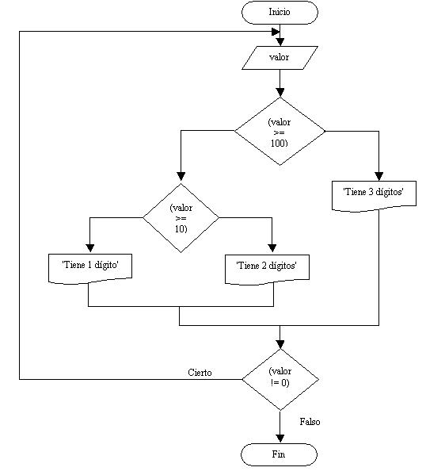
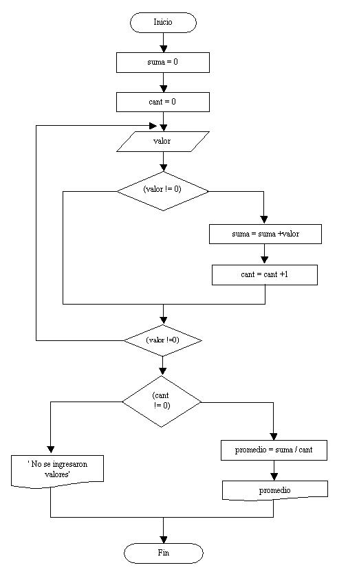

La estructura do while es otra estructura repetitiva, la cual ejecuta al menos una vez su bloque repetitivo, a diferencia del while o del for que podían no ejecutar el bloque.
Esta estructura repetitiva se utiliza cuando conocemos de antemano que por lo menos una vez se ejecutará el bloque repetitivo.
La condición de la estructura está abajo del bloque a repetir, a diferencia del while o del for que está en la parte superior.
Representación gráfica:

El bloque de operaciones se repite MIENTRAS que la condición sea Verdadera.
Si la condición retorna Falso el ciclo se detiene. En Java, todos los ciclos repiten por verdadero y cortan por falso.
Es importante analizar y ver que las operaciones se ejecutan como mínimo una vez.
Problema 1:
Escribir un programa que solicite la carga de un número entre 0 y 999, y nos muestre un mensaje de cuántos dígitos tiene el mismo. Finalizar el programa cuando se cargue el valor 0.
Diagrama de flujo:

No hay que confundir los rombos de las estructuras condicionales con los de las estructuras repetitivas do while.
En este problema por lo menos se carga un valor. Si se carga un valor mayor o igual a 100 se trata de un número de tres cifras, si es mayor o igual a 10 se trata de un valor de dos dígitos, en caso contrario se trata de un valor de un dígito. Este bloque se repite hasta que se ingresa en la variable valor el número 0 con lo que la condición de la estructura do while retorna falso y sale del bloque repetitivo finalizando el programa.
Programa:
import java.util.Scanner;
public class EstructuraRepetitivaDoWhile1 {
public static void main(String[] ar) {
Scanner teclado=new Scanner(System.in);
int valor;
do {
System.out.print("Ingrese un valor entre 0 y 999 (0 finaliza):");
valor=teclado.nextInt();
if (valor>=100) {
System.out.println("Tiene 3 dígitos.");
} else {
if (valor>=10) {
System.out.println("Tiene 2 dígitos.");
} else {
System.out.println("Tiene 1 dígito.");
}
}
} while (valor!=0);
}
}
Problema 2:
Escribir un programa que solicite la carga de números por teclado, obtener su promedio. Finalizar la carga de valores cuando se cargue el valor 0.
Cuando la finalización depende de algún valor ingresado por el operador conviene el empleo de la estructura do while, por lo menos se cargará un valor (en el caso más extremo se carga 0, que indica la finalización de la carga de valores)
Diagrama de flujo:

Es importante analizar este diagrama de flujo.
Definimos un contador cant que cuenta la cantidad de valores ingresados por el operador (no lo incrementa si ingresamos 0)
El valor 0 no es parte de la serie de valores que se deben sumar.
Definimos el acumulador suma que almacena todos los valores ingresados por teclado.
La estructura repetitiva do while se repite hasta que ingresamos el valor 0. Con dicho valor la condición del ciclo retorna falso y continúa con el flujo del diagrama.
Disponemos por último una estructura condicional para el caso que el operador cargue únicamente un 0 y por lo tanto no podemos calcular el promedio ya que no existe la división por 0.
En caso que el contador cant tenga un valor distinto a 0 el promedio se obtiene dividiendo el acumulador suma por el contador cant que tiene la cantidad de valores ingresados antes de introducir el 0.
Programa:
import java.util.Scanner;
public class EstructuraRepetitivaDoWhile2 {
public static void main(String[] ar) {
Scanner teclado=new Scanner(System.in);
int suma,cant,valor,promedio;
suma=0;
cant=0;
do {
System.out.print("Ingrese un valor (0 para finalizar):");
valor=teclado.nextInt();
if (valor!=0) {
suma=suma+valor;
cant++;
}
} while (valor!=0);
if (cant!=0) {
promedio=suma/cant;
System.out.print("El promedio de los valores ingresados es:");
System.out.print(promedio);
} else {
System.out.print("No se ingresaron valores.");
}
}
}
El contador cant DEBE inicializarse antes del ciclo, lo mismo que el acumulador suma. El promedio se calcula siempre y cuando el contador cant sea distinto a 0.
Problema 3:
Realizar un programa que permita ingresar el peso (en kilogramos) de piezas. El proceso termina cuando ingresamos el valor 0. Se debe informar:
a) Cuántas piezas tienen un peso entre 9.8 Kg. y 10.2 Kg.?, cuántas con más de 10.2 Kg.? y cuántas con menos de 9.8 Kg.?
b) La cantidad total de piezas procesadas.
Diagrama de flujo:

Los tres contadores cont1, cont2, y cont3 se inicializan en 0 antes de entrar a la estructura repetitiva.
A la variable suma no se la inicializa en 0 porque no es un acumulador, sino que guarda la suma del contenido de las variables cont1, cont2 y cont3.
La estructura se repite hasta que se ingresa el valor 0 en la variable peso. Este valor no se lo considera un peso menor a 9.8 Kg., sino que indica que ha finalizado la carga de valores por teclado.
Programa:
import java.util.Scanner;
public class EstructuraRepetitivaDoWhile3 {
public static void main(String[] ar) {
Scanner teclado=new Scanner(System.in);
int cant1,cant2,cant3,suma;
float peso;
cant1=0;
cant2=0;
cant3=0;
do {
System.out.print("Ingrese el peso de la pieza (0 pera finalizar):");
peso=teclado.nextFloat();
if (peso>10.2) {
cant1++;
} else {
if (peso>=9.8) {
cant2++;
} else {
if (peso>0) {
cant3++;
}
}
}
} while(peso!=0);
suma=cant1+cant2+cant3;
System.out.print("Piezas aptas:");
System.out.println(cant2);
System.out.print("Piezas con un peso superior a 10.2:");
System.out.println(cant1);
System.out.print("Piezas con un peso inferior a 9.8:");
System.out.println(cant3);
}
}
Problemas propuestos
- Realizar un programa que acumule (sume) valores ingresados por teclado hasta ingresar el 9999 (no sumar dicho valor, indica que ha finalizado la carga). Imprimir el valor acumulado e informar si dicho valor es cero, mayor a cero o menor a cero.
-
En un banco se procesan datos de las cuentas corrientes de sus clientes. De cada cuenta corriente se conoce: número de cuenta y saldo actual. El ingreso de datos debe finalizar al ingresar un valor negativo en el número de cuenta.
Se pide confeccionar un programa que lea los datos de las cuentas corrientes e informe:
a)De cada cuenta: número de cuenta y estado de la cuenta según su saldo, sabiendo que:
Estado de la cuenta 'Acreedor' si el saldo es >0. 'Deudor' si el saldo es <0. 'Nulo' si el saldo es =0.
b) La suma total de los saldos acreedores.
import java.util.Scanner;
public class EstructuraRepetitivaDoWhile4 {
public static void main(String[] ar) {
Scanner teclado=new Scanner(System.in);
int suma,valor;
suma=0;
do {
System.out.print("Ingrese un valor:");
valor=teclado.nextInt();
if (valor!=9999) {
suma=suma+valor;
}
}while (valor!=9999);
System.out.print("El valor acumulado es ");
System.out.println(suma);
if (suma==0) {
System.out.println("El valor acumulado es cero.");
} else {
if (suma>0) {
System.out.println("El valor acumulado es positivo.");
} else {
System.out.println("El valor acumulado es negativo");
}
}
}
}
import java.util.Scanner;
public class EstructuraRepetitivaDoWhile5 {
public static void main(String[] ar) {
Scanner teclado=new Scanner(System.in);
int cuenta;
float saldo,suma;
suma=0;
do {
System.out.print("Ingrese número de cuenta:");
cuenta=teclado.nextInt();
if (cuenta>=0) {
System.out.print("Ingrese saldo:");
saldo=teclado.nextFloat();
if (saldo>0) {
System.out.println("Saldo Acreedor.");
suma=suma+saldo;
} else {
if (saldo<0) {
System.out.println("Saldo Deudor.");
} else {
System.out.println("Saldo Nulo.");
}
}
}
} while(cuenta>=0);
System.out.print("Total de saldos Acreedores:");
System.out.print(suma);
}
}